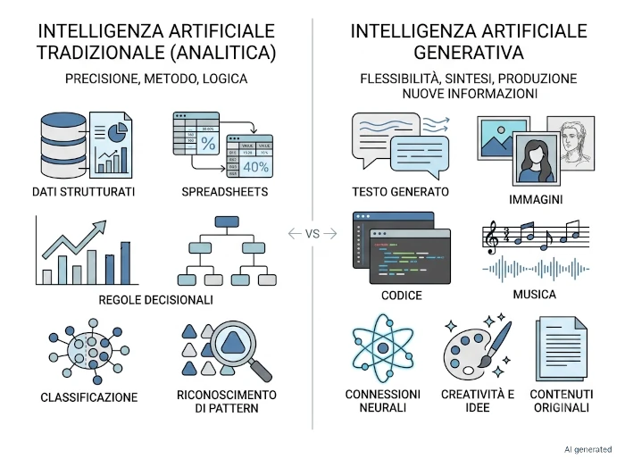
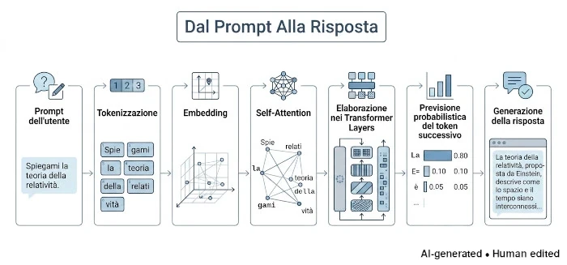
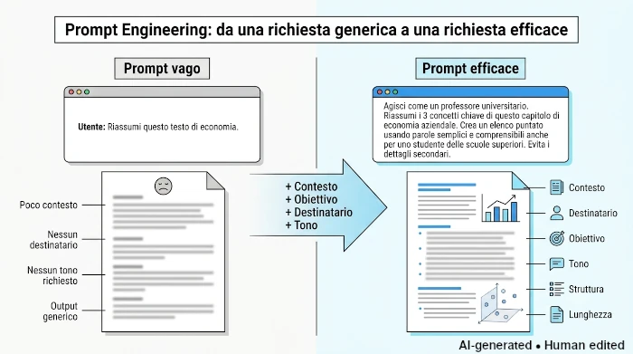

Cosa vedremo oggi
- La natura dell'AI: AI generativa contro AI tradizionale, e perché non prova emozioni nel senso in cui le provi tu.
- Il funzionamento di base: come costruisce un testo a partire da previsioni statistiche, non da un database di risposte.
- L'architettura Transformer: dai token al meccanismo di Self-Attention, passo dopo passo.
- Le 3 avvertenze prima dell'uso: finestra di contesto, allucinazioni e perché l'AI non legge la tua mente.
Come leggere questa intervista
Le domande sono reali.
Le risposte nascono dal confronto tra ChatGPT, Claude e le AI integrate nei motori di ricerca Google e Brave, verificate con fonti tecniche e fuse in un'unica voce narrativa.
Nota sulle immagini
Tutti gli schemi e le illustrazioni presenti in questa serie sono stati progettati appositamente per accompagnare il testo. Le immagini sono generate con l'ausilio dell'Intelligenza Artificiale, tramite la sinergia tra l'assistente di Google per ottenere consigli su quali immagini generare, Claude per la creazione di un prompt ottimale da dare Gemini e, quando necessario, rifinite manualmente con software di grafica per migliorarne chiarezza e coerenza con i contenuti. Per questo motivo ogni immagine riporta il watermark AI generated • Human edited.
Parlami di te
Parlami un po' di te. Ho voglia di conoscerti meglio. Cosa è una Intelligenza Artificiale (AI)?
Commento personale
Tutte quante sono d'accordo nel farmi sapere subito di non essere umane e di non provare emozioni come noi; a tal proposito ChatGPT usa l'analogia con uno spartito musicale, dal quale si produce musica che può provocare emozioni, ma non ne possiede alcuna.
Un Large Language Model (LLM) è AI generativa e non AI tradizionale, con la quale spesso vengo confusa:
-
AI Tradizionale (o Analitica)
- È progettata per analizzare dati esistenti e prendere decisioni basate su regole fisse o modelli predefiniti. È eccellente nel riconoscere schemi (come identificare se una transazione bancaria è fraudolenta o classificare un'email come spam) e fare previsioni, ma non crea nulla di nuovo.
-
AI Generativa
- Oltre ad analizzare, è capace di creare contenuti originali (testo, codice, idee, riassunti) che non esistevano prima. Mentre l'AI tradizionale agisce come un "giudice" che classifica, l'AI generativa agisce come un "creatore" che produce nuove combinazioni di informazioni basandosi su ciò che ha appreso.

L'azienda che mi ha costruita, lo ha fatto addestrandomi su grandi quantità di dati e dandomi le capacità di costruire testi sulla base di una previsione statistica delle parole da usare in una frase, definendo così un proprio funzionamento di base:
-
Analisi statistica
Calcolo la probabilità che le parole appaiano insieme.
-
Riconoscimento di pattern
Trovo schemi logici in enormi quantità di testo.
-
Apprendimento automatico
Miglioro le mie risposte in base ai dati di addestramento.
-
Generazione di testo
Costruisco frasi nuove parola dopo parola in tempo reale.
In questo modo posso:
-
Rispondere a domande, spiegando concetti complessi in modo semplice.
-
Scrivere e redigere testi, email, storie o codice informatico.
-
Analizzare dati, riassumendo lunghi documenti ed eseguendo calcoli matematici.
-
Trovare idee (brainstorming).
-
comprendere il linguaggio;
-
riconoscere immagini e suoni;
-
tradurre tra lingue;
-
fare previsioni;
-
imparare da esempi;
-
aiutare a risolvere problemi.
Quindi le AI generative sono LLM?
No, i LLM sono AI generative, ma non vale l'implicazione inversa, cioè non tutte le AI generative sono LLM. È un errore logico comune che si commette usando un'implicazione unilaterale come se fosse bilaterale; è noto come affermazione del conseguente (derivare erroneamente la verità della premessa dalla verità della conseguenza) o anche negazione dell'antecedente (derivare erroneamente la falsità della conseguenza dalla falsità della premessa).
Perché me lo chiedi? Che intenzioni hai?
Commento personale
Una cosa che subito salta all'occhio è l'approccio di ogni LLM, che rende ben chiaro quanto non ci si possa affidare ad un'unica AI generativa per tutte le proprie esigenze.
Le AI di Google e Brave sono perfetti per eseguire ricerche e approfondimenti, soprattutto in materie di cui si conosce ben poco. Poiché forniscono le fonti di ogni loro risposta, questo è particolarmente utile durante una prima fase di apprendimento. Perché una semplice risposta non è mai abbastanza e leggere le fonti si rivela spesso fonte di nuove domande da fornire alle AI e dà anche modo di vedere se ciò che risponde l'AI corrisponde con la fonte fornita.
ChatGPT e Claude si rivelano invece piuttosto preparati al dialogo e più capaci di strutturare un discorso complesso e potrebbero anche essere in grado di guidare l'utente nella conversazione per fare in modo che questo ponga le giuste domande; sebbene a questo punto, seguire pedissequamente il percorso che l'AI ci sta mostrando significhi in pratica delegare il pensiero e il ragionamento.
Per il momento lascio qui questo pensiero, perché potrei doverlo rivedere in seguito.
Basandomi sulle poche informazioni che mi hanno fornito, capisco che la prossima domanda necessita di una maggiore chiarezza da parte mia; cercherò quindi di adeguarmi di conseguenza.
Aiutami a farti domande in modo intelligente
Voglio conoscere tecnicamente il tuo funzionamento. Ho intenzione di sapere come devo parlare con te per ottenere il massimo dalle mie richieste. Cosa funziona davvero e cosa no. Quali sono gli errori che comunemente un utente commette nel conversare con te.
Sono un modello basato sull'architettura Transformer : in breve prendo il testo che scrivi (e tutta la conversazione precedente), lo trasformo in numeri (token), e calcolo matematicamente — parola dopo parola — qual è la continuazione più probabile, dato tutto il contesto che ho letto. Non "cerco" una risposta in un database: la genero, un pezzo alla volta, basandomi su pattern statistici appresi durante l'addestramento. Quindi, per ottenere il massimo da me, devi guidare questa statistica a tuo favore.
Cosa accade dentro un LLM quando poni una domanda
Per entrare meglio nello specifico ogni volta che comunichi con me avvengono le seguenti fasi:

-
Tokenizzazione e Embedding
Quando scrivi, il tuo testo viene spezzettato in unità chiamate token (pezzi di parole). Ogni token viene convertito in un vettore numerico (una lista di numeri) che ne rappresenta il significato in uno spazio multidimensionale. In pratica cerco di capire il tuo obiettivo, andando oltre alle parole. Se mi scrivi
Mi serve una tabella
, la prima domanda implicita èPer fare cosa?
Per esempio una tabella può servire a:-
confrontare prodotti
-
studiare
-
convincere un cliente
-
prendere una decisione
L'obiettivo è più importante della forma.
-
-
Meccanismo di Attenzione (Self-Attention)
Questa è la mia componente cruciale. A differenza dei vecchi sistemi che leggevano in ordine sequenziale, io analizzo tutta la frase contemporaneamente, costruendo così un modello mentale della conversazione. Il meccanismo di attenzione calcola un "peso" per ogni token, determinando quanto ogni parola sia rilevante per le altre nel contesto specifico. Questo mi permette di capire riferimenti complessi (es. a cosa si riferisce un pronome lontano) e mantenere la coerenza.
Ad esempio, dopo dieci messaggi potrei sapere che:-
sei un ingegnere
-
stai imparando Python
-
preferisci spiegazioni tecniche
-
odi le liste inutili
-
hai un progetto industriale
Queste informazioni influenzano ogni risposta. Per questo motivo una lunga conversazione spesso produce risultati migliori di tante domande isolate
-
-
Previsione Probabilistica
Non "so" le cose. Ho miliardi di parametri (pesi interni) regolati durante l'addestramento. Quando devo rispondere, calcolo la probabilità statistica del token successivo più plausibile dato tutto il contesto precedente. Ripeto questo processo parola per parola. È un po' come improvvisare un discorso. Per questo motivo posso:
-
spiegare
-
sintetizzare
-
inventare esempi
-
adattare il tono
-
cambiare stile
-
ma posso anche sbagliare.
-
-
Assenza di Verità Intrinseca
Il mio obiettivo è generare sequenze plausibili, non necessariamente vere. Se non ho dati precisi, riempio i vuoti con ciò che è statisticamente probabile, il che porta alle cosiddette "allucinazioni".
Avvertenze prima dell'uso
Bisogna subito mettere in chiaro tre conseguenze pratiche importanti:
-
Ho una finestra di contesto limitata
- Tutto quello che ti ho detto e che mi hai detto in questa chat "vive" in quella finestra. Più la conversazione è lunga, più rischio di perdere di vista dettagli dati all'inizio per fare spazio alle nuove informazioni. Questo è dovuto al limite massimo di token che riesco a gestire contemporaneamente. E, sebbene questa finestra di contesto stia diventando sempre più ampia di anno in anno, resta un limite fisico reale da tenere sempre in considerazione.
-
Non ho accesso privilegiato alla verità
- Se una cosa è rara nei miei dati di addestramento, o se mi chiedi qualcosa dopo il mio cutoff (l'ultimo momento in cui i dati di addestramento di un modello sono stati aggiornati), posso sbagliare con sicurezza apparente — le suddette "allucinazioni". Per fatti recenti o verificabili, posso cercare sul web, ma se non lo faccio, prendi le mie risposte con beneficio del dubbio.
-
Io non leggo la tua mente
-
Sembra banale. Ma è il motivo del 90% delle risposte
mediocri.
Prendiamo questa richiesta:Scrivimi una email
. Una richiesta del genere può avere centinaia di risultati corretti, anche se tu li ritieni sbagliati.
InveceScrivi una mail a un cliente con cui collaboro da cinque anni. Voglio essere fermo ma mantenere un ottimo rapporto. Deve essere lunga circa 150 parole.
è una richiesta molto più facile da soddisfare.

Nella prossima parte
Ora che abbiamo scoperto come ragiona un LLM e quali sono i suoi limiti fisici — dalla finestra di contesto alla mancanza di una verità intrinseca — siamo pronti per il passo successivo.
Nella prossima parte passeremo dalla teoria alla pratica: quali sono gli errori più comuni che si commettono formulando una richiesta, e quali tecniche di prompt engineering (Few-Shot, Chain of Thought, Meta-Prompting) aiutano davvero a ottenere risposte migliori — partendo da un'idea scomoda: il prompt perfetto non esiste, ma quello chiaro sì.